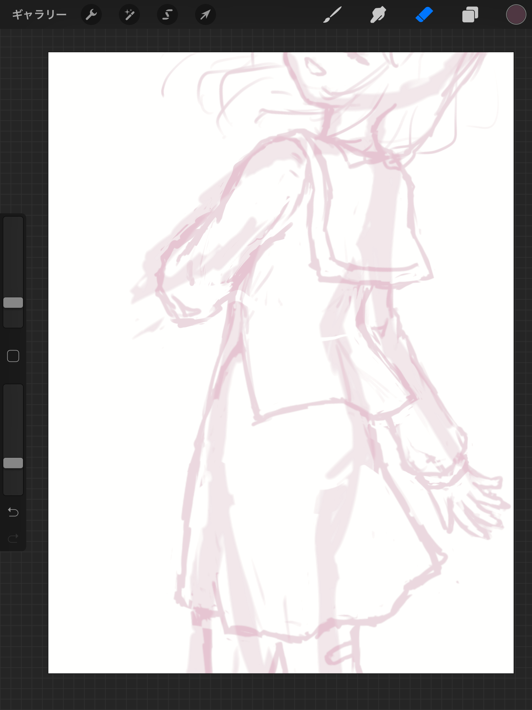

落書きはたのしい
たぶん人生落書きしてない期間のほうが短い。たしかに受験期はちょっと自粛してた記憶がなくもないですが、それ以外はずっとノートやらプリントやらの余白にちまちま落書きをする生活を続けてきました。少なくとも小5くらいからは。もう記憶のない幼稚園児・小学校低学年時代も何かしらで落書きはしていたはずなので、21年の人生のうち余裕で半分以上は何かしらに落書きをする生活を続けてきたことになります。妙にデフォルメのつよいちみっこい絵柄なのは、限られたスペースにおえかきする習慣の影響かも。ちなみにこの落書き癖かなり重症で、教習所の学科の間シャーペンに触れてしまうと即座に落書きを始めてしまいそうだったのでずっと蛍光ペンを握り続けていたという小話があるくらい。
DS・3DSでおえかきしていた時代もあるので、今手元にある無印iPadがぶっちぎりでおえかき面積ナンバーワンを誇っているわけですね。十分機能の揃った有料おえかきソフトのおかげもあってがっつりイラストが生やせてたのしいわけですが、今までの経験を踏まえるとむしろ「描く面積を絞ったほうが落書きが捗るのでは？」という発想に至りまして。それで最近にょきにょき生やしているのがおおお美少女達落書きなわけです。
（例のポーズ）
— ₍₍⁽⁽φ( '༥' )₎₎⁾⁾ (@slpp_bild) September 3, 2021
「できるわけないんだよなぁ…」 pic.twitter.com/zTSIn0f2kP
スペックでマウントとってくる人達 pic.twitter.com/68xQZp3gKe
— ₍₍⁽⁽φ( '༥' )₎₎⁾⁾ (@slpp_bild) September 3, 2021
何故かお告げのように降ってきたので描いた例のポーズ⚙️ちゃんと、待望の🥟くん。キャラデザ確定遅くなってめっちゃすいません……になっています。ちなみにパーカーは赤色、靴はスニーカー。スーツの👓お姉さんと並べるとめっちゃいい感じのおねしょたでたすかる。
この落書きたちなんですけど、実はすごく小さいサイズで描いてます。
Procreateってデフォルト設定で脳死でキャンパス増やすと丁度iPadの画面ぴったりのキャンバスを生やしてくれます。これにぎっしりと描き並べていく形を取っています。まあ、描いてる最中はがっつり拡大するんですけどね。

DS・3DS時代の影響である程度解像度が低いほうが安心するので、これくらいがっつり拡大したほうが描きやすいという。落書きに限らず最近の絵は大ラフもこれくらいのサイズ感で生やしてることが多いです。たとえば数日前のPrima Vistaとか、一旦ちみっこく描いたラフ
を、後から拡大してサイズを合わせて清書するという形を取っています。

最初は小さめにちまちま描いたほうが、全体の構図やバランスを考えやすくてよいですね。まあ個人差あるでしょうが。
ちまちま描くと何が一番良いかというと、生産速度を極限まで上げられるという。たとえばちょっと昔の絵ですけど
🍣🥰🍶 pic.twitter.com/a0ZTOBf21L
— ₍₍⁽⁽φ( '༥' )₎₎⁾⁾ (@slpp_bild) July 8, 2021
これなんかは
🍣😊
— ⚙️金具⚙️ (@Kanagu_Requiem) July 8, 2021
🍣😮❗️
🍣🥰🍶
このツイートを見てからわずか10分で投稿にまで至ってます。⚙️ちゃんは特に手癖の塊みたいなキャラデザしてるので、15分もらえればそれなりのものをさっと生やすことができます。すごいでしょ。
@秋田犬記念館 pic.twitter.com/YB27WuQDzW
— ₍₍⁽⁽🍳₎₎⁾⁾ (@sal_pipr) July 24, 2021
アナログにも対応済（これは本人の目の前で描いた）。⚙️ちゃんはいいぞ。